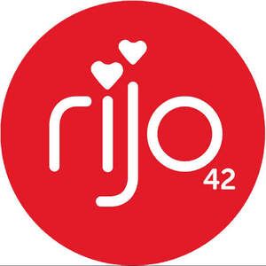
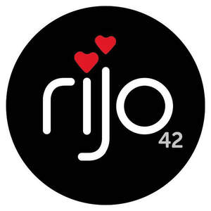
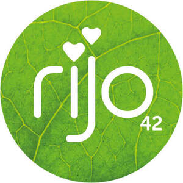

Trade Mark Journal No.2026/006 6 February 2026
UK00004325363 16 January 2026 (7,9,11,30,35,43)
Mark 1
Mark 2

Mark 3

Mark 4

- Class 7
- Automatic vending machines.
- Class 9
- Machines for vending snacks; machines for vending canned and bottled beverages; machines for coin-operated apparatus; cash registers; calculating machines; parts and fittings for all the aforesaid goods.
- Class 11
- Water dispensers; chilled water dispenser; hot water dispensers; water fountains; carbonated water dispensers; coffee machines; machines for making hot drinks; parts and fittings for all of the aforesaid goods.
- Class 30
- Coffee; tea; fruit tea; fruit infusions; herbal tea; cocoa; coffee based drinks; chocolate drinks; artificial coffee; syrups for drinks; coffee flavourings [flavourings]; flour and preparations made from cereals, bread, pastry and confectionery, ices; biscuits; biscuits confectionery; bakery goods; wafers; cakes; marshmallows; marshmallow confectionery; sugarless and/or fat-reduced confectionery, pastries and bread products; sugarless and/or fat-reduced confectionery, pastries and bread products for use as aids to slimming; honey, treacle; yeast, baking-powder; salt, mustard; vinegar, sauces (condiments, none being tuna-based or fish-based condiments); spices; ice, gravy and preparations for making gravy; sugar, rice; tapioca; sago.
- Class 35
- Rental of vending machines; rental of coffee machines; retail and online retail services connected with the sale automated vending machines, water dispensers, water fountains; carbonated water dispensers; coffee machines, machines for making hot drinks, water bottles, travel cups and mugs, mugs, cups, bowls, plates, cups, saucers, paper cups, paper mugs, coffee cups, clothing, headwear, meat, poultry and game, meat extracts, roasted or grilled meat and poultry, flavoured or spiced prepared meat products, soups and soup preparations, bouillon and preparations for making bouillon, jellies, jams, eggs, milk and milk products, smoothies (milk based), preserves, preserved, dried and cooked fruits and vegetables, coffee, tea, fruit tea, fruit infusions, herbal tea, cocoa, coffee based drinks, chocolate drinks, artificial coffee, syrups for drinks, coffee flavourings [flavourings], flour and preparations made from cereals, bread, pastry and confectionery, ices, biscuits, biscuits confectionery, bakery goods, wafers, cakes, marshmallows, marshmallow confectionery, sugarless and/or fat-reduced confectionery, pastries and bread products, sugarless and/or fat-reduced confectionery, pastries and bread products for use as aids to slimming, honey, treacle, yeast, baking-powder, salt, mustard, vinegar, sauces, spices, ice, gravy and preparations for making gravy, sugar, rice, tapioca, sago.
- Class 43
- Services for providing food and drink; coffee shop services; restaurant, café, snack bar, coffee bar services; takeaway services; catering services; preparations of takeaway foods and beverages.
Rijo 42 Ingredients Ltd
Representative: Walker Morris LLP